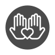

- 2008
Growing up I spent a lot of time making photos in the darkroom, and making art on InDesign. Ideating and creating has always been a priority of mine.
- 2010
In college I studied how and why people do the things they do on a societal, cultural, and economic level.
- 2013
I spent time in China conducting qualitative research, such as in-depth interviews and focus groups.
- 2014
After I graduated, I took some time to travel around the world, where I satiated my need to explore and learn about how other people live their lives around the globe.
- 2015
I surrounded myself in design via architecture. Here I was in charge of our company website which was an important step on my path towards choosing to pursue UX.
- 2016
With strong people skills and an empathetic demeanor, I excelled at counseling families, but wasn't content. I needed a job where I could be creating.
 - 2018
Discovering a career that combines my passion to create, and my strength of understanding people felt like everything I had been searching for in one. Dec 2017 I started my path towards a career in UX!

This is what I like to do